01
Roadside and crew
IntegratedActual active travelers, editable billboard and bottom-left caption.
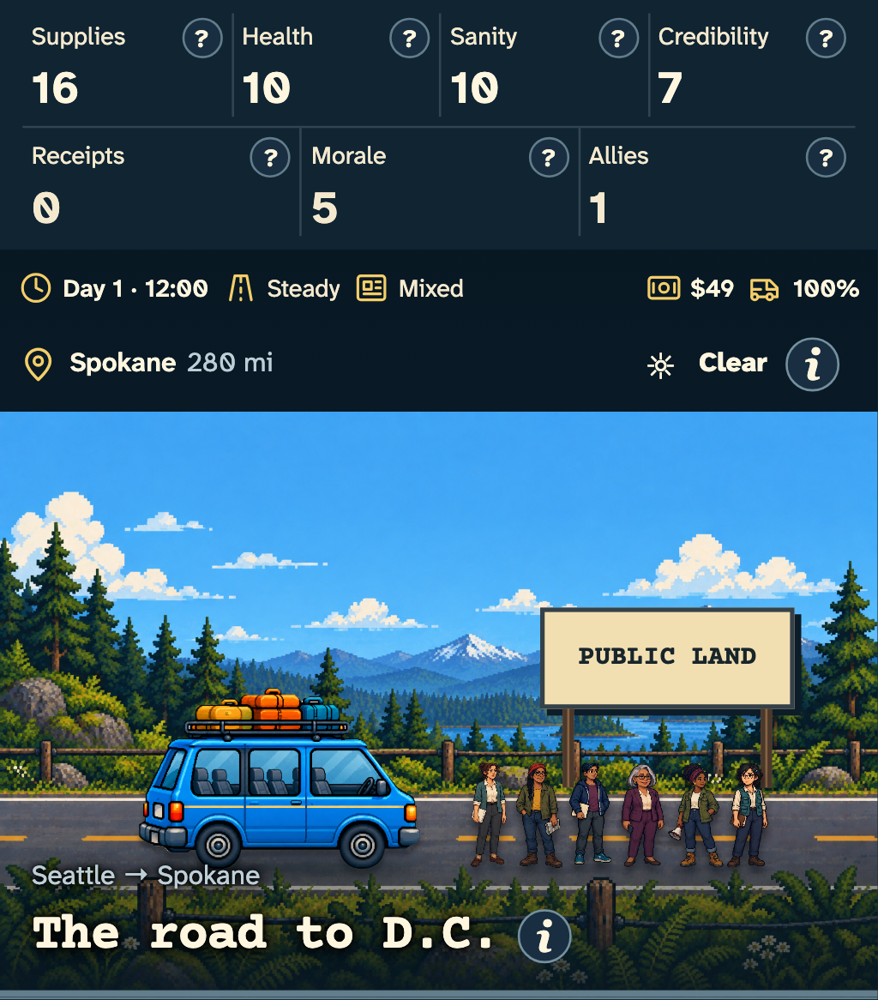
02
Night travel setting
IntegratedSame saved route and crew at 23:00; clock lighting does not advance time.
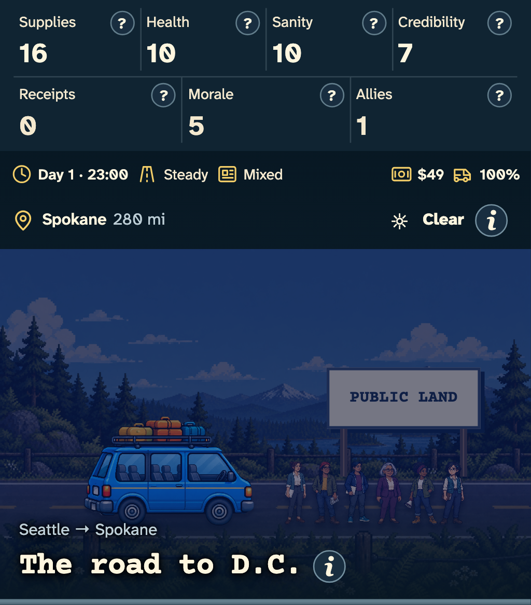
03
Town setting
PartialShared regional setting. Encounter-specific art and localized content remain incomplete.
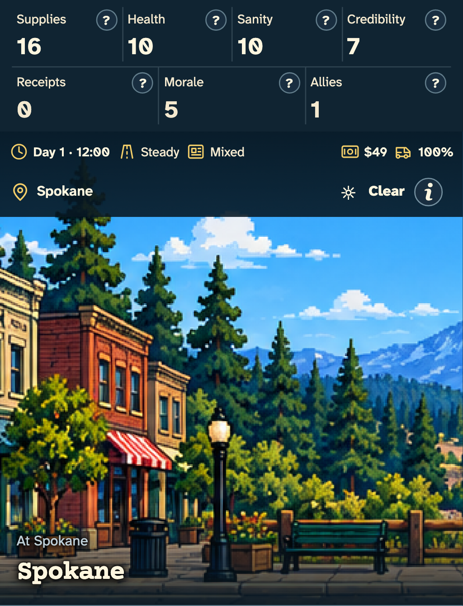
04
Outside-contact referral
PartialRetained red-hat scene with editable labels; no traveling crew member leaves. Small-label and translation review remains open.
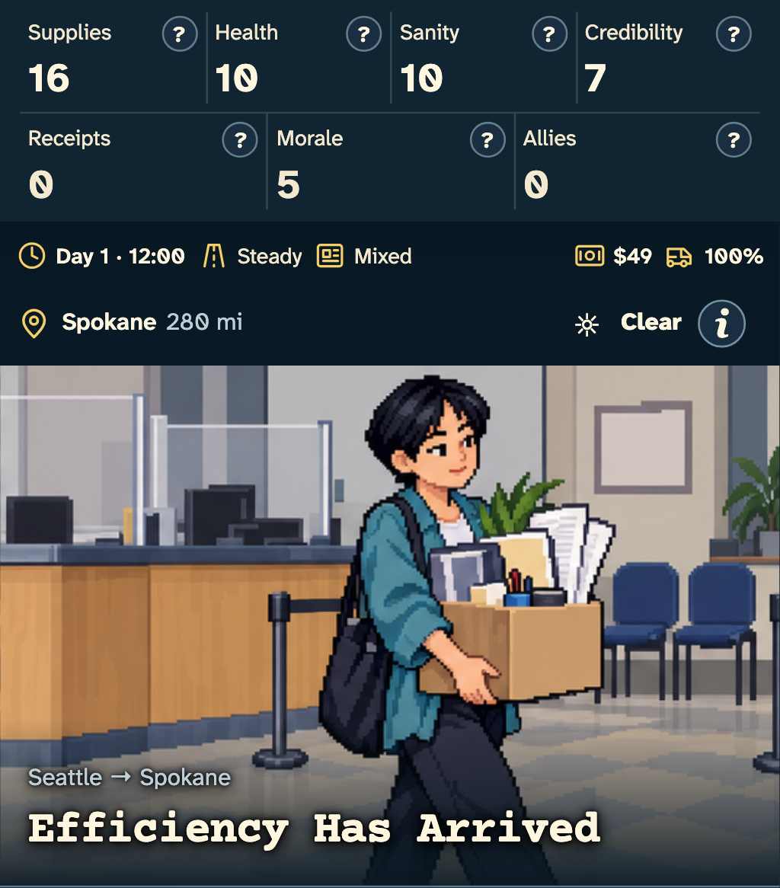
05
Public comments, secured
PartialRetained safe-and-comment-box panel with localized live lettering. Final artwork acceptance remains open.
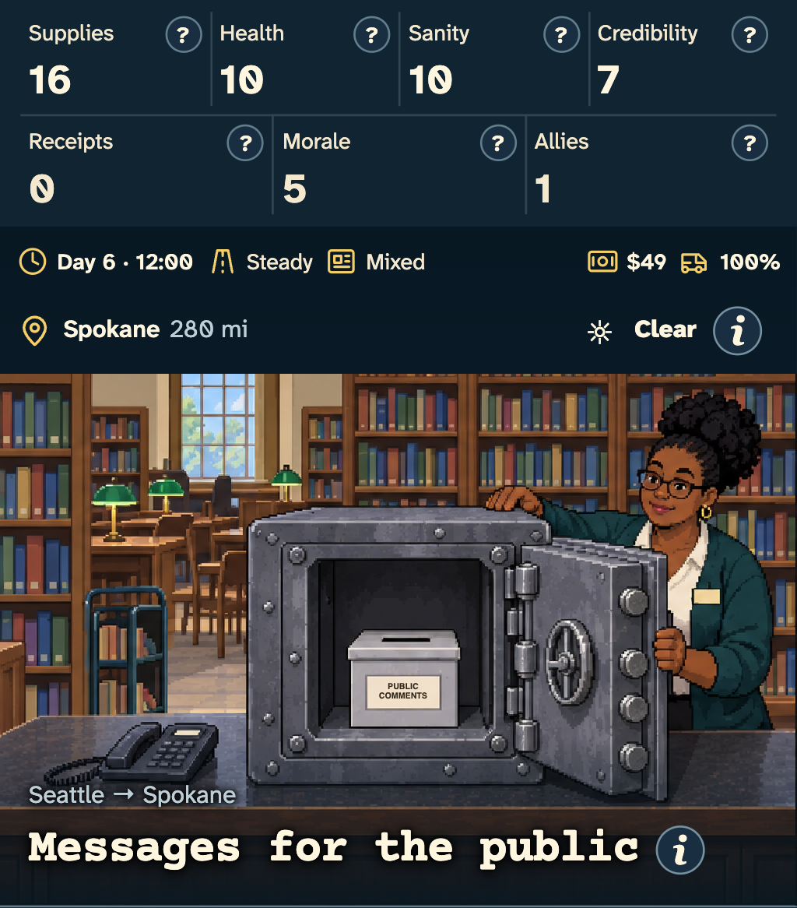
06
Honest price, hidden fee
PartialRetained price-display scene; all lettering and dollar amounts are editable UI.
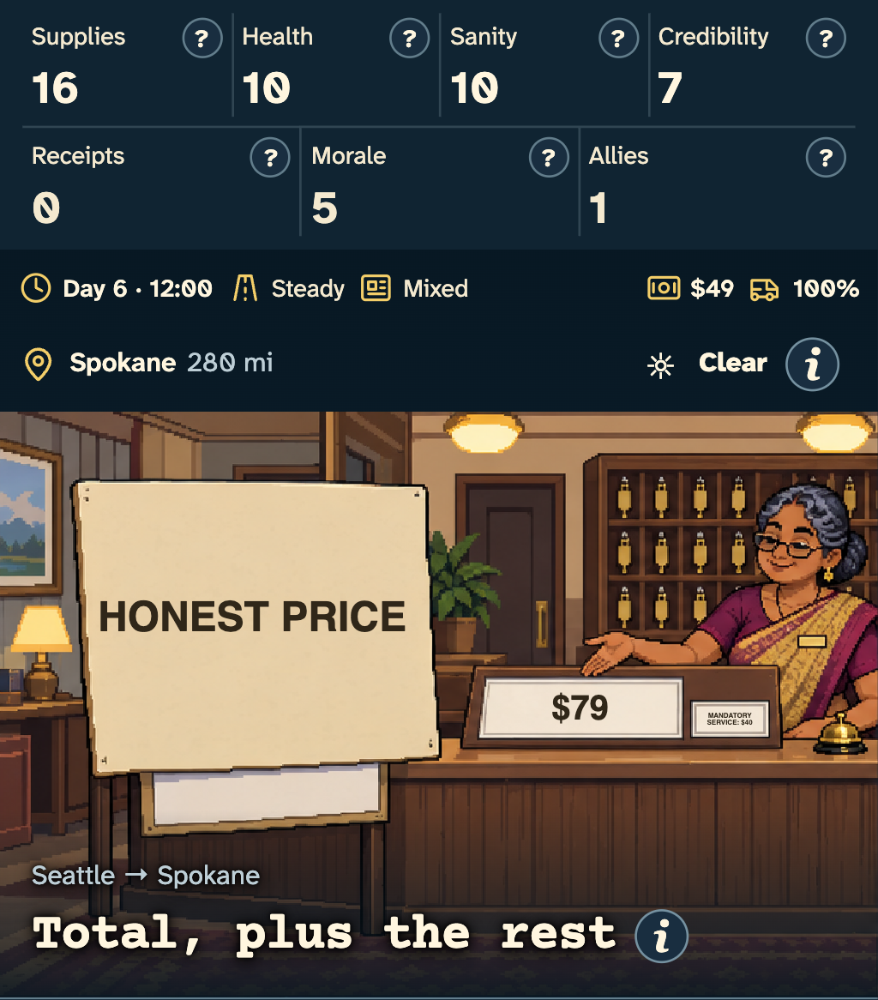
07
Completed barter
PartialRetained panel selected by a committed trade. Mobile foreground-caption overlap remains a review item.
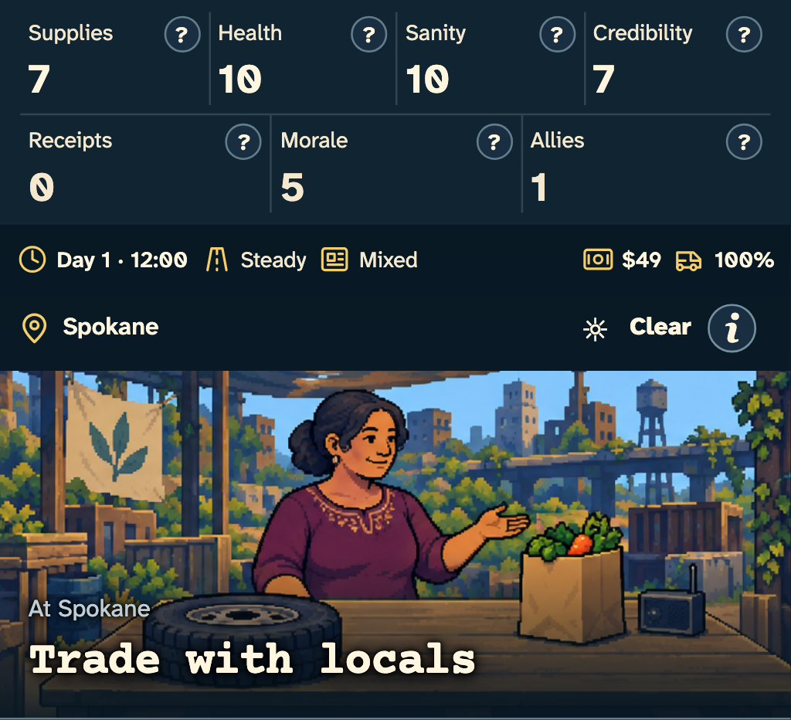
08
Completed pantry work
PartialRetained sorting outcome after the actual activity succeeds. Offer-specific art remains incomplete.
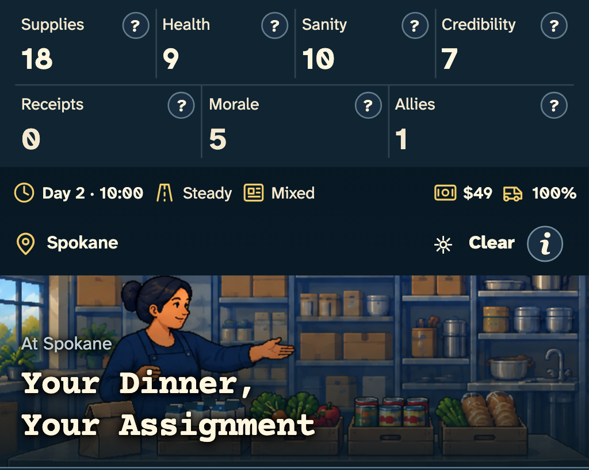
09
Completed cleanup shift
IntegratedCleaned dishes and empty runtime tip jar; cash, time and sanity follow the existing activity handler.
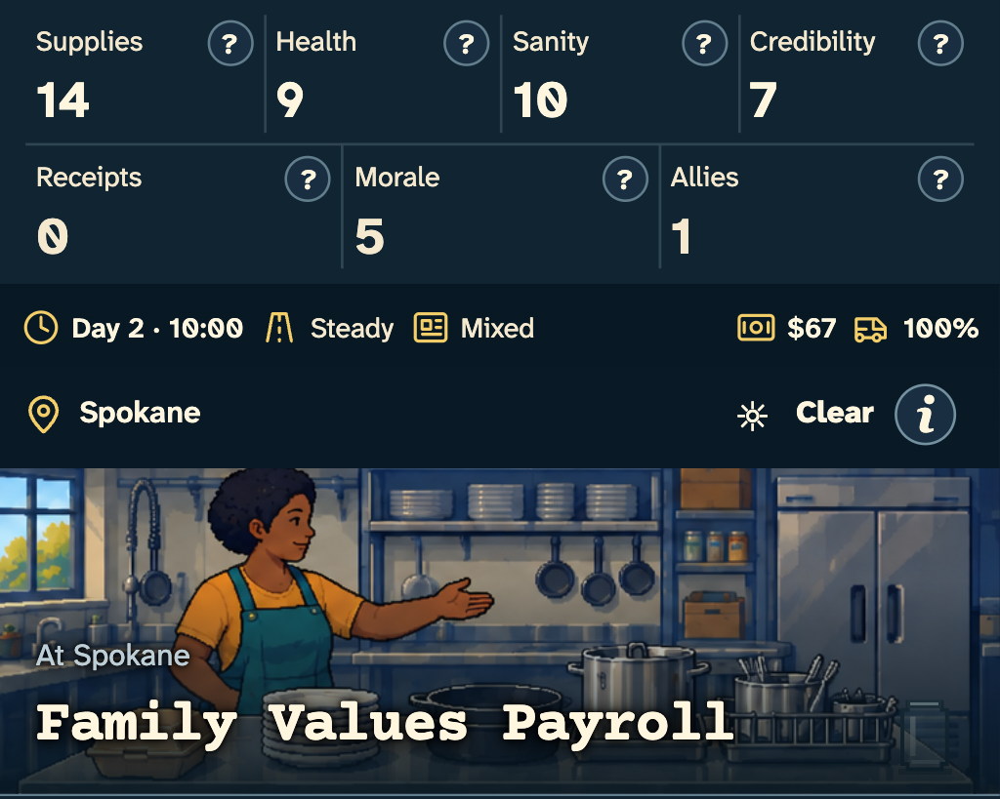
10
Concrete inspection
IntegratedRetained inspector over the current route. Four surviving occupants remain; departed and dead travelers are absent.
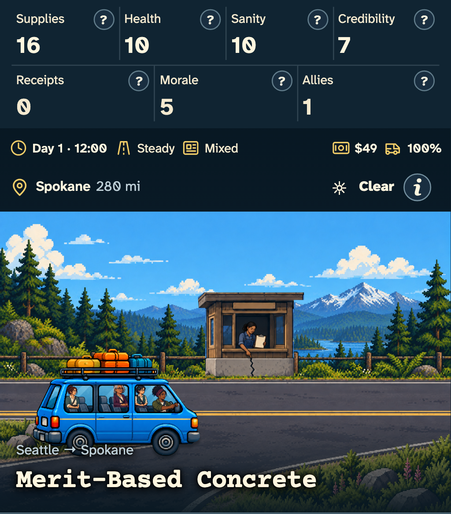
11
Journey ending
PartialRecorded regional scene and ending copy; portrait inset removed. Ending-specific editorial props remain incomplete.
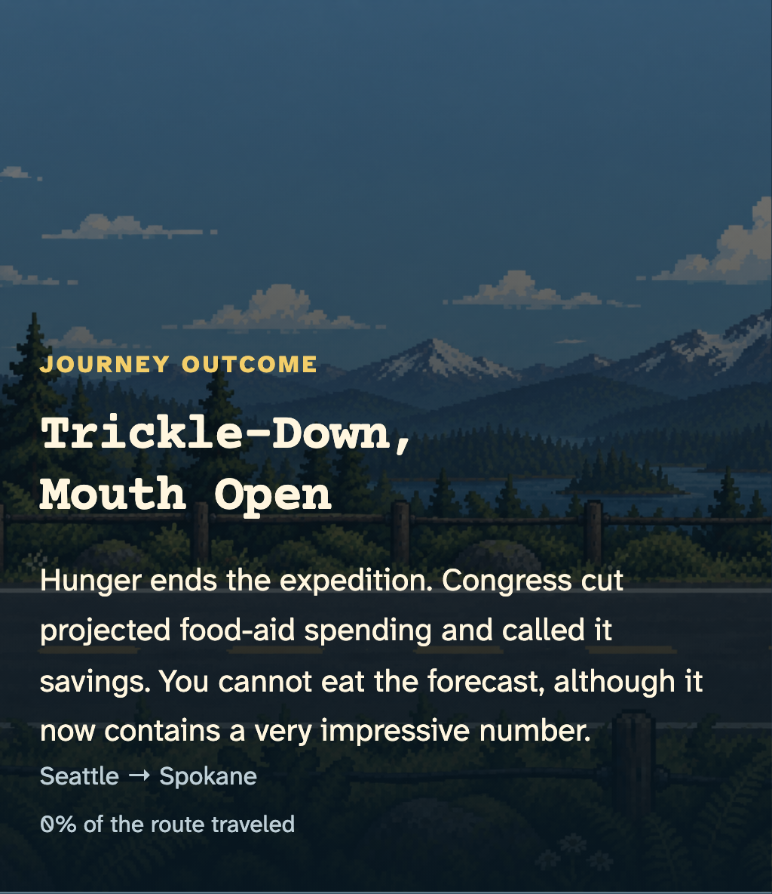